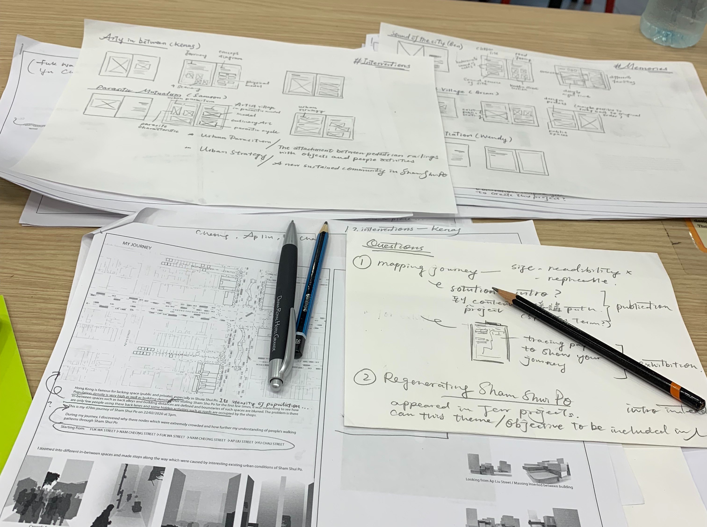
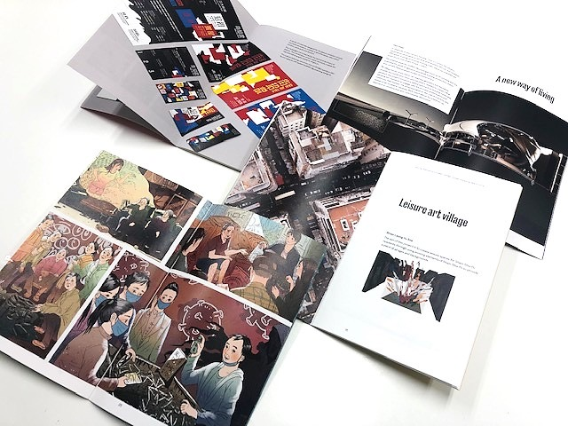

During my last semester in Hong Kong Design Institute (HKDI) in 2020, I had participated a remote
collaboration project with architecture design students
in Ravensbourne University London, where we studied a 300m x 300m area in Sham Shui Po (Hong Kong) and Hackney
Wick (London) in terms of people,
communication and architecture. My role in this project is also as an editorial designer, which I followed and
tried to understand all
other participated students' design processes so as to document the process and outcomes of the whole project,
as well as to follow up with the print production with quality control.
Based on the content, I have caterogrized all students' projects into four major themes, i.e. interventions,
stories, memories and sustaining identities.
A set of 5 booklet in these themes, including the overview of the project is therefore created at the end.

Process of adjusting flat plan and editing content of student's project

A set of 5 printed booklets